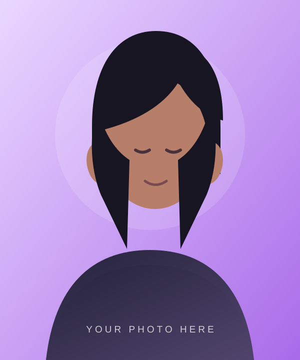

RDZ
VISUALABTECH FOR EVERYONE
↗
VISUALABTECH FOR EVERYONE
RDZ Visualab
Platform teknologi asistif berbasis AI dan computer vision untuk mendukung aksesibilitas.
Halo, aku Rida Dzakiyyah — mahasiswa Teknologi Rekayasa Multimedia, designer, dan creative technologist yang senang menggabungkan desain, teknologi, dan dampak sosial.

Aku percaya desain yang baik bukan hanya terlihat menarik, tetapi juga membuat sesuatu menjadi lebih mudah dipahami, diakses, dan digunakan.
Berangkat dari dunia desain komunikasi visual dan berkembang ke teknologi multimedia, aku mengeksplorasi persimpangan antara visual design, user experience, dan teknologi interaktif.
Let's create something impactful ↗Politeknik Negeri Media Kreatif
D4 Teknologi Rekayasa MultimediaUI/UX · Graphic Design · Creative Technology
Design systems, digital products, interactive mediaFigma · Illustrator · Procreate · Canva
Flutter · HTML · CSS · Python · Three.jsA selection of experiments, digital products, and visual stories built with curiosity and purpose.
Platform teknologi asistif berbasis AI dan computer vision untuk mendukung aksesibilitas.
Katalog menu interaktif berbasis WebAR untuk membantu bisnis kuliner menampilkan produk dalam 3D.
Konsep aplikasi anti-perundungan dengan mood tracker, pelaporan anonim, dan edukasi.
Eksplorasi visual interaktif untuk mengenal sistem dan teknologi photovoltaic.
Konsep stasiun pemilahan sampah dengan sistem poin digital untuk setoran botol.
Konsep ruang pamer virtual yang mengeksplorasi pengalaman belajar dan interaksi imersif.
Menggabungkan strategi, visual, dan teknologi untuk menciptakan pengalaman digital yang relevan.
Merancang alur, wireframe, dan antarmuka yang intuitif dengan fokus pada kebutuhan pengguna.
↗Mengembangkan identitas visual, konten digital, layout, dan materi komunikasi yang kuat.
↗Mengeksplorasi web interaktif, AI, multimedia, dan pengalaman digital berbasis teknologi.
↗Terbuka untuk kolaborasi, project kreatif, dan kesempatan untuk menciptakan sesuatu yang berdampak.